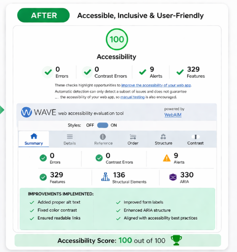

50+
Websites Delivered
WCAG 2.2 AA ADA / Section 508 EAA / AODA / UK
Manual accessibility audits and code-level remediation for ADA, Section 508, European Accessibility Act (EAA), AODA, and UK requirements—delivered with screenshot evidence and developer-ready guidance.
Try the free website accessibility self-check
Manual review. Practical remediation guidance. No automated-only score dump.
Free website tools
Review common barriers on one page or compare text and background colors with the WCAG contrast checker. Both tools give you a practical starting point.
Accessibility services
I help businesses identify and fix accessibility barriers in the code that matters most — without sacrificing design, performance, SEO, or user experience.
WCAG accessibility audit and remediation planning for websites, ecommerce stores, and custom web experiences.
Code-level fixes for HTML, CSS, JavaScript, ARIA, keyboard access, focus states, forms, modals, menus, and more.
Review and remediation for document structure, reading order, headings, tables, links, forms, and navigation.
Accessibility support for Shopify, WooCommerce, and Magento storefronts, including product pages, forms, navigation, and cart interactions.
Website improvements
Real examples of accessibility barriers identified and addressed while preserving the original design and user experience.


Keyboard navigation, focus behavior, and interactive-element barriers affecting the storefront experience.
Improved keyboard interaction, visible focus, semantic HTML, ARIA usage, and accessible component behavior.
Improved usability while preserving the original visual design and tested interaction flow.
WCAG remediation
Clear audit findings, practical fixes, and implementation support for themes, plugins, forms, and keyboard interactions.
Measured improvement
Client work documented an accessibility rating improvement from 88 to 96 on desktop and 86 to 92 on mobile.
PDF accessibility
Reading order, headings, tables, links, form fields, and navigation made clearer for PDF users and assistive technology.
Real client results
Accessibility work completed for businesses across websites, ecommerce stores, and custom web applications.
"Himanshu did a great job! Knows accessibility very well and got the job done by the time he promised. Definitely recommend."
"Himanshu did a great job and was able to get my website compliant with accessibility in a matter of a few days. Everything looks great and I would recommend him..."
"Himanshu did a great job. He laid out a clear plan based on an audit of my two websites, and executed everything in a matter of days. Would highly recommend..."
"Upped our company website accessibility from 88 to 96 rating for desktop - 86 to 92 mobile."
"Himanshu was prompt, courteous and VERY fast. Working up our next contract for him."
"Great person to work with - very understanding of what needed to be done and clear communications. I will use again for similar projects!"
Free accessibility review
I’ll review one important page—such as your homepage, product page, or checkout—and send three practical accessibility findings within 24–48 hours.
Share the page URL and the email address where I should send the findings.
Manual review. No automated-only score. No commitment.
What clients value
Feedback from completed Upwork projects consistently highlights communication, quality, attention to detail, and reliable delivery.
Accessibility expertise
I perform both accessibility testing and code-level remediation across modern website platforms and custom frontend builds.
Improve your website accessibility without needing to understand WCAG technical requirements yourself.
Accessibility support for Shopify, WooCommerce, Magento, and other ecommerce experiences.
Get accessibility findings, remediation guidance, and testing support for client websites.
Accessibility review and remediation support for React, Next.js, Vue, and custom web applications.
Accessibility insights
WCAG Guide
Simple ways to review common accessibility issues and understand what to improve first.
ADA Compliance
A practical checklist for websites that want clearer guidance on accessibility priorities.
WordPress
Common problems with themes, plugins, heading structure, forms, and keyboard navigation.
I work on WCAG audits, ADA support, remediation, and PDF accessibility instead of broad general development.
You get clear priorities, screenshots, user impact notes, and fix guidance your team can understand.
I can support remediation after the audit so issues move from a spreadsheet into actual fixes.
A practical accessibility report designed to help you understand issues quickly and fix them without confusion.
Clear issue breakdown so you can prioritize critical, serious, and moderate accessibility barriers first.
Actionable recommendations written to help developers and site owners implement changes faster.
Visual proof of issues so your team can understand where the problem appears and why it matters.
A focused checklist to track fixes, improve accountability, and move your site toward better accessibility.
I support WCAG 2.2 work for ADA and Section 508 projects in the US, the EAA in Europe, AODA in Canada, and UK Equality Act / PSBAR expectations. The relevant standard and scope are agreed before work begins.
No. I can help identify accessibility issues and also support the remediation work needed to fix them.
Websites, web apps, landing pages, components, forms, and PDFs.
A website accessibility audit helps identify issues that prevent users with disabilities from accessing your website. These issues may include missing alt text, poor color contrast, keyboard navigation problems, and screen reader compatibility issues.
Fixing accessibility issues improves usability and supports WCAG conformance work for ADA, Section 508, the EAA, AODA, and UK accessibility obligations. An audit also provides a practical evidence trail and prioritized remediation plan for internal or agency teams.
My accessibility audit service provides clear issue reports, practical fix recommendations, and optional remediation support to help you improve your website quickly.
Free 3-issue mini teardown
Get a free mini teardown and practical next steps, then we can discuss the right audit and remediation support for your team.